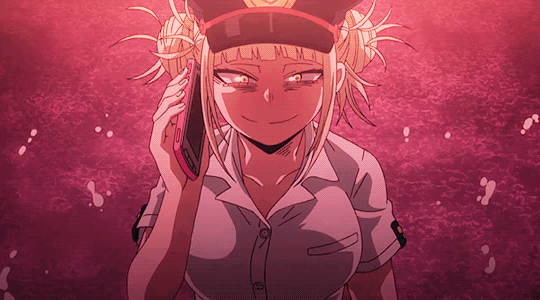

My Quirk is Transform! It's useful for becoming others. Although the side effect of wanting blood can suck sometimes. But it's my Quirk, so I'm using it! I even went undercover as Camie once!
Transform let's me perfectly copy my target, down to their voice. 1 cup of blood is about 1 full day transformed.
When I consume multiple peoples blood I can transform between them without the need to revert to normal. This comes in handy when I need to disappear in a hurry!
Later on when my Quirk awakened I was able to use others Quirks while transformed into them! But it relied a lot on my emotional attachment to them.